Психоанализ — это метод изучения глубинных психологических процессов, помогающий понять бессознательные механизмы человеческого поведения. Чтобы освоить методы психоанализа и получить профессиональные навыки, необходимо пройти качественное обучение. Сегодня дистанционные курсы по психоанализу позволяют изучать теорию и практику в удобном формате, сочетая обучение с работой или другими занятиями. Мы собрали рейтинг лучших онлайн-курсов 2026 года для тех, кто хочет пройти профессиональную переподготовку, углубить знания в клинической психологии или начать карьеру в психоаналитическом консультировании.
Информация обновлена:
ТОП онлайн-курсов обучения психоанализу
- 🏆Психоанализ и психоаналитическая психотерапия — Московский институт психологии (по промокоду onlinekursy скидка 🎁 10% на заказ)
- 🏆Психолог-консультант с дополнительной специализацией в области психоанализа — НАДПО (по промокоду onlinekursy действует скидка 🎁 5%)
- 🏆Психолог-консультант с дополнительной специализацией в области психоанализа — МИПО (по промокоду onlinekursy действует скидка 🎁 10%)
- Психоанализ и психологическая психотерапия — MITM
- Психоанализ, психоаналитическая психотерапия и психоаналитическое консультирование в практике психолога — НЦРДО (по промокоду onlinekursy действует скидка 🎁 5%)
- Психоаналитический подход в консультативной практике психолога — НИИДПО
- Психоанализ, психоаналитическая психотерапия и психоаналитическое консультирование в практике психолога — ЦАППКК (по промокоду onlinekursy действует скидка 🎁 5%)
- Психоанализ — АПОК
- Психоанализ — ЭКОДПО
- Клинико-психологическая диагностика и психотерапия — Среда обучения и Московский институт психоанализа
- Курсы психоанализа — МШП
- Психоанализ, психоаналитическая психотерапия и психоаналитическое консультирование — Московский институт психоанализа
- Психоанализ — Восточно-Европейский Институт Психоанализа
- Психоанализ и психоаналитическая психотерапия — НИУ ВШЭ
Бесплатные курсы
- Бесплатный курс "Психоанализ для жизни" – Stepik
- Бесплатный онлайн-курс "Весь психоанализ" – AcademiaIT
Отличительные преимущества каждого дистанционного курса обучения по психоанализу
| Обучающая программа | Отличительные преимущества | Cайт |
|---|---|---|
| 1.🏆 Психоанализ и психоаналитическая психотерапия — Московский институт психологии | 54 модуля, супервизии, диплом, аккредитация ППЛ, практика на кейсах | Перейти |
| 2.🏆 Психолог-консультант с дополнительной специализацией — НАДПО | 680 часов практики, доступ к библиотекам, диплом ФИС ФРДО, бессрочный доступ | Перейти |
| 3.🏆 Психолог-консультант с доп. специализацией — МИПО | Год обучения, поддержка 24/7, диплом, онлайн библиотека | Перейти |
| 4. Психоанализ и психологическая психотерапия — MITM | 70 модулей, вебинары, диплом гос. образца, 7 месяцев | Перейти |
| 5. Психоанализ и психоаналитическое консультирование — НЦРДО | 950 часов, интерпретация снов, бессознательные мотивы, практика | Перейти |
| 6. Психоаналитический подход в практике — НИИДПО | Доступ к вебинарам, супервизии, дистанционный формат, диплом | Перейти |
| 7. Психоанализ и консультирование — ЦАППКК | Интенсивная практика, доступ к материалам, диплом, кейсы | Перейти |
| 8. Психоанализ — АПОК | Гибкий график, ФИС ФРДО, видеолекции, диплом | Перейти |
| 9. Психоанализ — ЭКОДПО | Ускоренное обучение, ФИС ФРДО, круглосуточный доступ, диплом | Перейти |
| 10. Клинико-психологическая диагностика — Среда обучения и МИП | 10 месяцев, клиническая практика, диплом МИП, онлайн взаимодействие | Перейти |
| 11. Курсы психоанализа — МШП | Комплексный подход, личные консультации, доступ к библиотеке | Перейти |
| 12. Психоанализ и консультирование — Московский институт психоанализа | Очное/дистанционное, практика в учреждениях, 33 месяца, диплом | Перейти |
| 13. Психоанализ — Восточно-Европейский Институт Психоанализа | Гибкий формат, доступ к лекциям, супервизии, 1.5 года | Перейти |
| 14. Психоанализ и психотерапия — НИУ ВШЭ | Международная аккредитация, супервизии, 2 года обучения, диплом | Перейти |
1. 🏆 Психоанализ и психоаналитическая психотерапия — Московский институт психологии
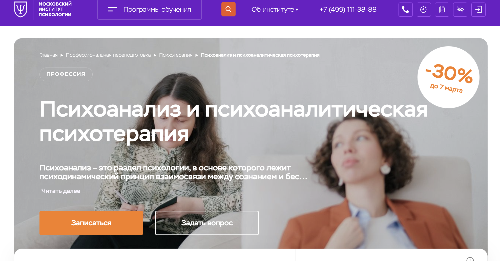- ✅ Официальный сайт: mip.institute
- 💸 Цена обучения: 189 968 ₽ (со скидкой 30%, полная цена 271 000 ₽).
- 💳 Рассрочка: доступна на 12 месяцев без процентов по 15 800 ₽/мес.
- 📚 Формат: дистанционное обучение, включая лекции, тесты, домашние задания и супервизии.
- ⏳ Продолжительность: 2 года.
- 📜 Документ: диплом о профессиональной переподготовке.
- 📝 Трудоустройство: Помощь в актуализации знаний и получении квалификации.
- 🔷 Для кого подходит курс: начинающим психологам, практикующим специалистам, желающим повысить квалификацию, и тем, кто хочет освоить психоанализ.
Особенности курса:
Обучение проходит в дистанционном формате, что делает курс удобным для студентов из любой точки мира. Программа охватывает современные методы психоанализа, давая глубокие знания и практические навыки. Московский институт психологии сотрудничает с Общероссийской профессиональной психотерапевтической лигой, что подтверждает высокий уровень образования. В рамках курса студенты получат возможность работать с реальными кейсами и изучат техники психоанализа в различных формах консультирования.
Кратко о программе:
- 54 тематических модуля, включая практикум
- Онлайн-лекции, тестирования и разборы кейсов
- Доступ к профессиональному сообществу
- Персональная поддержка куратора
Чему учатся студенты:
- Диагностировать бессознательные процессы
- Анализировать символизм сновидений
- Применять психоаналитические техники в терапии
- Проводить индивидуальные и групповые консультации
Преимущества:
- Гибкий формат обучения без отрыва от работы
- Диплом ценится профессиональным сообществом
- Возможность практики с реальными кейсами
- Программа актуальна для российского и международного рынка
Отзывы учеников:
Студенты отмечают удобный формат дистанционного обучения и доступность материалов. Преподаватели курса обладают высокой квалификацией и делятся практическими знаниями. Особо ценятся демонстрационные сессии и работа с реальными кейсами. Все отзывы
Перейти на официальный сайт курса2. 🏆 Психолог-консультант с дополнительной специализацией в области психоанализа — НАДПО
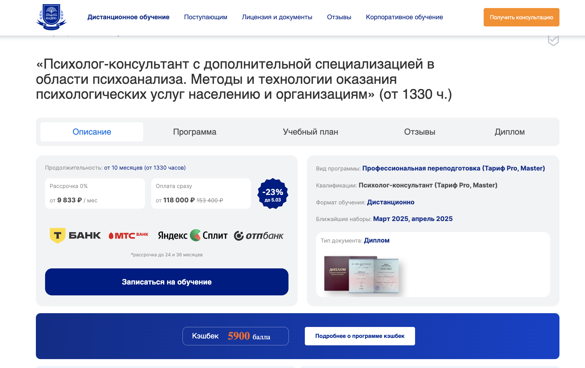- ✅ Официальный сайт: nadpo.ru
- 💸 Цена обучения: 118 000 ₽ (со скидкой 23% до 153 400 ₽).
- 💳 Рассрочка: 0% на 24 и 36 месяцев, от 9 833 ₽/мес.
- 📚 Формат: дистанционные занятия, включая аудиолекции, воркшопы, тестирование и онлайн-консультации.
- ⏳ Продолжительность: от 10 месяцев (1330 часов).
- 📜 Документ: диплом о профессиональной переподготовке.
- 📝 Трудоустройство: возможность работы в частной практике, центрах психологической помощи и онлайн-консультировании.
- 🔷 Для кого подходит курс: для новичков, желающих освоить психологическое консультирование, практикующих психологов и специалистов, желающих повысить квалификацию.
Особенности курса:
Программа обучения включает современные методы психоанализа и консультирования, позволяя студентам освоить ключевые техники работы с клиентами. Дистанционный формат делает обучение удобным и доступным из любой точки. Курс сочетает теоретическую базу и практическую подготовку, что помогает студентам уверенно применять полученные знания. В процессе обучения слушатели разберут реальные кейсы, пройдут супервизии и научатся применять психоаналитический подход в практике.
Кратко о программе:
- 680 часов практики с преподавателем
- Групповые воркшопы и супервизии
- Аудиолекции от профессионального диктора
- Доступ к библиотекам ЛитРес и Библиоклуб
- Практика консультирования с реальными клиентами
Чему учатся студенты:
- Применению методов психоанализа в консультировании
- Работе с внутренними конфликтами клиентов
- Диагностике и психоаналитическому исследованию
- Техникам психоаналитической терапии
- Групповому психоанализу и консультированию
Преимущества:
- Официальный диплом, внесенный в реестр ФИС ФРДО
- Бессрочный доступ к курсу и материалам
- Поддержка кураторов и преподавателей
- Гибкий график занятий, подходящий для работающих
- Скидки и кэшбек при оплате обучения
Отзывы учеников:
Студенты отмечают качественное дистанционное обучение, доступность материалов и профессионализм преподавателей. Особое внимание уделяется практическим занятиям и обратной связи, что помогает освоить профессию и уверенно начать карьеру в психологическом консультировании. Все отзывы
Перейти на официальный сайт курса3. 🏆 Психолог-консультант с дополнительной специализацией в области психоанализа — Московский институт профессионального образования
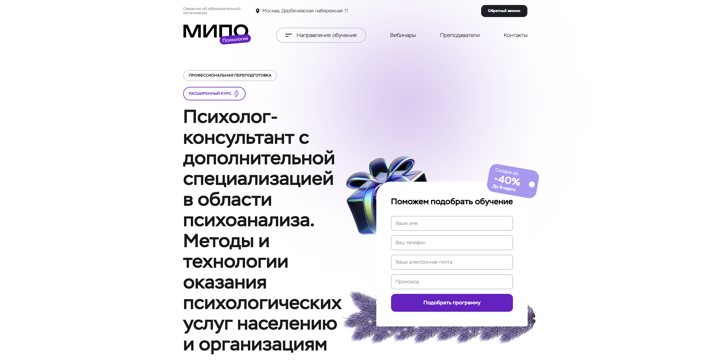
- ✅ Официальный сайт: mipo.msk.ru
- 💸 Цена обучения: зависит от выбранного тарифа и условий от 108 611 ₽.
- 💳 Рассрочка: доступна на 24 месяца от 4 526₽/мес.
- 📚 Формат: дистанционные курсы, включающие вебинары, тесты, практические занятия и доступ к материалам курса.
- ⏳ Продолжительность: 1 год.
- 📜 Документ: диплом о профессиональной переподготовке.
- 📝 Трудоустройство: Помощь в карьерном развитии и актуализации профессиональных навыков.
- 🔷 Для кого подходит курс: для начинающих и работающих психологов, желающих углубить свои знания и получить подтверждение квалификации.
Особенности курса:
Курс предлагает углубленное обучение психоаналитическим методам и техникам, что делает его отличным выбором для тех, кто хочет обучаться в удобном дистанционном формате. В Московском институте профессионального образования доступны современные подходы к обучению, включая использование обширной онлайн-библиотеки и качественный анализ кейсов.На протяжении всего курса студенты получат консультации от экспертов и кураторов.
Кратко о программе:
- Программа включает 5 тематических модулей
- Участие в вебинарах и тестирование после каждого модуля
- Практическая работа на реальных кейсах
- Круглосуточная поддержка службы заботы
Чему учатся студенты:
- Этики консультирования и установлению консультативного контакта
- Методам активного слушания и консультирования
- Использованию психодиагностических методов
- Особенностям делового общения
Преимущества:
- Гибкость обучения позволяет совмещать с работой
- Диплом признан как в России, так и за рубежом
- Доступ к записи лекций в любое время
- Поддержка и помощь от кураторов на всех этапах обучения
Отзывы учеников:
Студенты высоко оценивают качество преподавания и доступность обучения, отмечают актуальность полученных знаний для профессионального и личностного роста. Положительные изменения в карьере и жизни также подчеркивают выпускники курсов. Все отзывы
Перейти на официальный сайт курса4. Психоанализ и психологическая психотерапия — Московский институт технологий и управления

- ✅ Официальный сайт: mitm.institute
- 💸 Цена обучения: 90 000 ₽ (со скидкой 30%).
- 💳 Рассрочка: доступна на 12 месяцев без процентов по 7 500 ₽/ме.
- 📚 Формат: дистанционные занятия, включающие видеолекции, домашние задания и вебинары.
- ⏳ Продолжительность: 7 месяцев.
- 📜 Документ: диплом о профессиональной переподготовке государственного образца.
- 📝 Трудоустройство: помогает освежить знания и получить новые навыки для повышения квалификации.
- 🔷 Для кого подходит курс: начинающие и практикующие психологи, а также те, кто хочет освоить новую профессию и разобраться в себе.
Особенности курса:
Обучение на курсе проходит в удобном дистанционном формате, что позволяет учиться из любой точки мира без отрыва от основной деятельности. Московский институт технологий и управления предлагает студентам актуальные знания в области психоаналитической терапии, сочетая теоретическую базу с практическими навыками. Программа адаптирована к современным реалиям и требованиям работодателей, что обеспечивает выпускникам конкурентоспособность на рынке труда.
Кратко о программе:
- 70 тематических модулей с акцентом на практические навыки
- Регулярные вебинары и обсуждения с экспертами
- Доступ к цифровым материалам и библиотеке на весь период обучения
- Интерактивные задания и проектная работа с обратной связью
Чему учатся студенты:
- Работе с бессознательными процессами и их диагностике
- Техникам психоанализа в психологической терапии
- Методам терапии тревожных и депрессивных расстройств
- Особенностям индивидуального и группового консультирования
Преимущества:
- Дистанционный формат обучения позволяет не прерывать работу
- Поддержка кураторов и экспертов на протяжении всего обучения
- Практические задания, которые можно использовать в реальной работе
- Государственный диплом, котирующийся на рынке труда
Отзывы учеников:
Ученики отмечают доступность материала и высокий уровень преподавания. Особое внимание уделяется практическим занятиям, что делает обучение более ценным и применимым в работе. Преподаватели помогают установить глубокий контакт и обеспечивают поддержку и мотивацию на всех этапах курса. Все отзывы
Перейти на официальный сайт курса5. Психоанализ, психоаналитическая психотерапия и психоаналитическое консультирование — НЦРДО
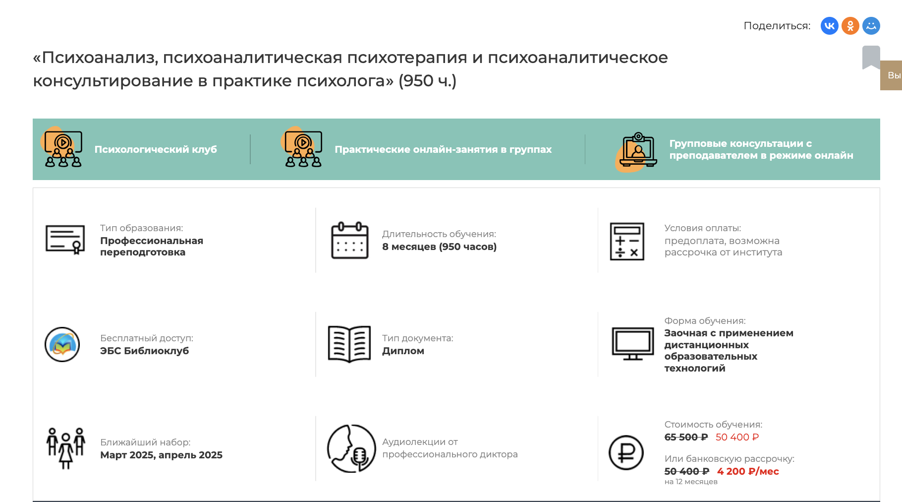- ✅ Официальный сайт: ncrdo.ru
- 💸 Цена обучения: 65 500 ₽ (скидка до 50 400 ₽).
- 💳 Рассрочка: предоставляется на 12 месяцев по 4 200 ₽ в месяц.
- 📚 Формат: заочное обучение с применением дистанционных образовательных технологий, аудиолекции, практические занятия.
- ⏳ Продолжительность: 8 месяцев (950 часов).
- 📜 Документ: диплом о профессиональной переподготовке.
- 📝 Трудоустройство: Курс позволяет актуализировать знания и повысить квалификацию.
- 🔷 Для кого подходит курс: для работающих психологов и новичков, интересующихся психоанализом.
Особенности курса:
Обучение осуществляется в удобном дистанционном формате, что позволяет заниматься из любой точки мира. Программа ориентирована на развитие профессиональных навыков в области психоанализа и предлагает обширное практическое применение теорий. Студенты освоят различные психоаналитические техники, что позволит проводить эффективное консультирование и терапию. Особое внимание уделяется интерпретации сновидений, выявлению бессознательных мотивов и особенностям психоанализа депрессий и раннего детства. Программа способствует глубокому пониманию теорий и практик, что необходимо для успешной профессиональной деятельности.
Кратко о программе:
- Практические занятия с опытными преподавателями
- Доступ к библиотеке вебинаров и методическим материалам
- Тематические консультации и практикумы
- Возможность учиться в удобное время
Чему учатся студенты:
- Проводить психоаналитическую диагностику личности
- Использовать методы психоанализа в работе с клиентами
- Анализировать и интерпретировать сны и действия
- Разрешать внутренние конфликты через психоанализ
Преимущества:
- Гибкость обучения, позволяющая сочетать с работой
- Доскональное изучение психоаналитических техник
- Высококвалифицированные преподаватели и спикеры
- Возможность получения профессионального диплома
Отзывы учеников:
Студенты отмечают высокое качество преподавания и доступность учебных материалов. Они подчеркивают ценность практических занятий и возможность личного общения с преподавателями. Все отзывы
Перейти на официальный сайт курса6. Психоаналитический подход в консультативной практике психолога — НИИДПО
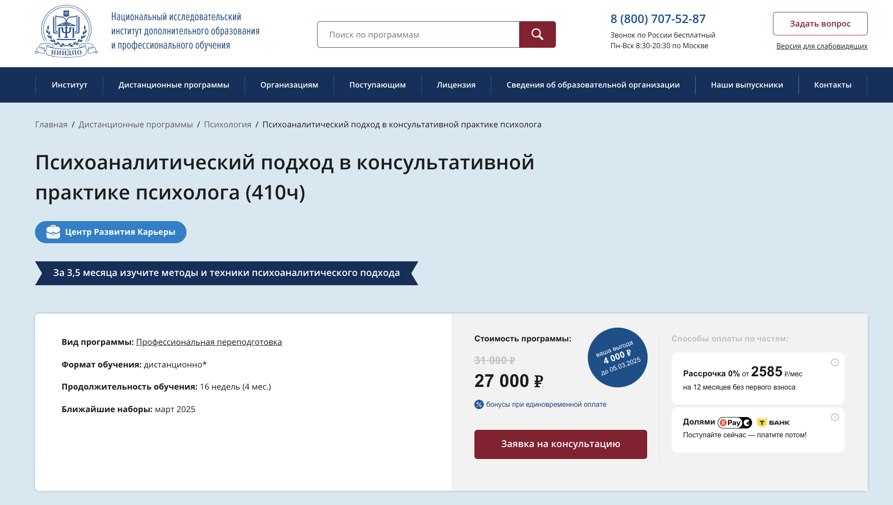
- ✅ Официальный сайт: niidpo.ru
- 💸 Цена: 27 000 ₽ (со скидкой; полная стоимость 31 000 ₽).
- 💳 Рассрочка: Доступна на 12 месяцев, 0% первый взнос, платёж от 2585 ₽/мес.
- 📚 Формат: Дистанционное обучение, включая лекции, тесты и практические задания.
- ⏳ Продолжительность: 16 недель (4 месяца).
- 📜 Документ: Диплом о профессиональной переподготовке.
- 📝 Трудоустройство: Помощь в планировании и развитии карьеры.
- 🔷 Для кого подходит курс: Начинающим и практикующим психологам, а также всем, кто интересуется саморазвитием.
Особенности курса:
Курс охватывает теорию и практику психоаналитического подхода, позволяя освоить новые и востребованные на рынке методики психоаналитического консультирования. Обучение проходит на современной платформе, что обеспечивает удобный доступ к материалам и возможность сочетать учебу с работой. Также предусмотрена поддержка экспертов-практиков и доступ к библиотеке вебинаров, которые поддерживают профессиональное развитие. Диплом признается на территории всей России.
Кратко о программе:
- Интенсивная практическая и теоретическая подготовка
- База вебинаров по психологии и смежным дисциплинам
- Индивидуальные задания по каждому модулю
- Итоговая аттестация для получения диплома
Чему учатся студенты:
- Методам психоаналитического консультирования
- Работе с различными структурами личности
- Интерпретации сновидений и символики
- Налаживанию терапевтического альянса с клиентами
Преимущества:
- Дистанционный формат позволяет обучаться из любой точки мира
- Доступ к материалам курса после его завершения
- Возможность участия в супервизиях и обсуждении кейсов
- Скидки и бонусы при единовременной оплате курса
Отзывы учеников:
Многие студенты отмечают высокий уровень обучения и квалифицированную поддержку преподавателей. Подчёркивают ценность практических занятий, которые помогают в работе с клиентами. Ученики ценят возможность учиться дистанционно и интегрировать полученные знания в профессию. Все отзывы
Перейти на официальный сайт курса7. Психоанализ, психоаналитическая психотерапия и психоаналитическое консультирование в практике психолога — ЦАППКК
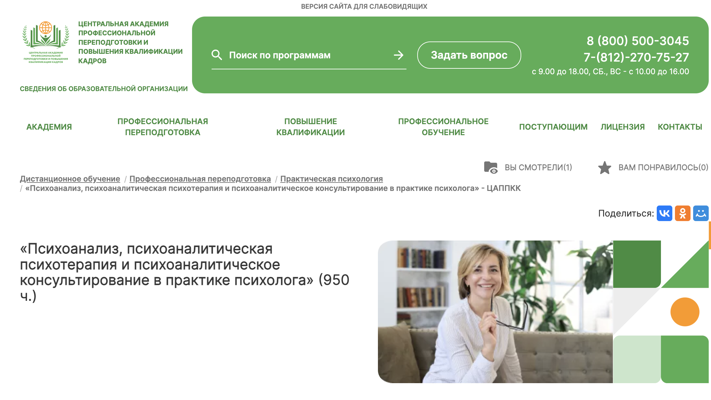- ✅ Официальный сайт: appkk.ru
- 💸 Цена обучения: 47 300 ₽ (со скидкой 30%).
- 💳 Рассрочка: доступна на 12 месяцев с платежами от 3 942 ₽/мес.
- 📚 Формат: заочные занятия с применением дистанционных образовательных технологий, доступ к вебинарам.
- ⏳ Продолжительность: 8 месяцев (950 часов).
- 📜 Документ: диплом о профессиональной переподготовке.
- 📝 Трудоустройство: помощь в карьерном развитии и составлении резюме.
- 🔷 Для кого подходит курс: для психотерапевтов, клинических психологов, студентов психологии и всех, кто интересуется психоанализом.
Особенности курса:
Обучение в Центральной академии позволяет углубить знания в области психоанализа и практической психологии. Программа акцентируется на использовании психоаналитических методов в терапии, изучении бессознательных процессов и интерпретации сновидений. Слушатели получают бессрочный доступ к учебным материалам и поддержке, что делает обучение удобным и доступным в любой точке мира.
Кратко о программе:
- Интенсивное изучение психоанализа с практическими кейсами
- Доступ к обширной библиотеке вебинаров и материалов
- Онлайн-консультации с квалифицированными кураторами
- Практическая работа над реальными психологическими проблемами
Чему учатся студенты:
- Техникам интерпретации психоаналитических процессов
- Применению методов психоанализа в практике
- Анализу и интерпретации сновидений
- Этическим аспектам психологического консультирования
Преимущества:
- Дистанционное образование с гибким графиком
- Диплом с государственной аттестацией
- Поддержка в трудоустройстве и развитии карьеры
- Профессиональные преподаватели и актуальные материалы
Отзывы учеников:
Студенты отмечают поддержку со стороны наставников и актуальность курса. Особо подчеркивается ценность практических упражнений и возможность сотрудничества в профессиональном сообществе. Все отзывы
Перейти на официальный сайт курса8. Психоанализ — профессиональная переподготовка в АПОК
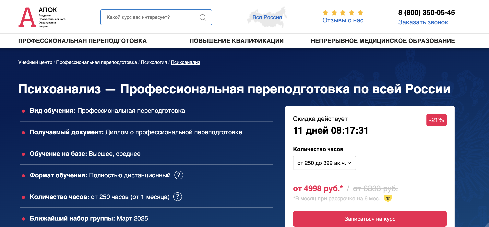- ✅ Официальный сайт: apokdpo.ru
- 💸 Цена обучения: от 29 990 ₽ (со скидкой 21% до 17 марта).
- 💳 Рассрочка: доступна на 6 месяцев без переплат.
- 📚 Формат: дистанционные занятия, видеолекции, тестирование.
- ⏳ Продолжительность: от 250 часов (от 1 месяца).
- 📜 Документ: диплом о профессиональной переподготовке.
- 📝 Трудоустройство: повышение квалификации, развитие карьеры.
- 🔷 Для кого подходит курс: для специалистов с высшим или средним образованием, желающих освоить психоанализ.
Особенности курса:
Курс предлагает удобный формат обучения с возможностью совмещения с работой. Программа разработана в соответствии с ФГОС и профессиональными стандартами. Студенты изучают современные методы психоанализа и психоаналитической психотерапии. Обучение проводится в дистанционном формате, а итоговые документы отправляются бесплатно по всей России. Все сведения о дипломах вносятся в ФИС ФРДО.
Кратко о программе:
- Гибкий график дистанционного обучения.
- Полностью онлайн-формат без посещения центра.
- Обратная связь от преподавателей.
- Программы соответствуют государственным стандартам.
Чему учатся студенты:
- Методам психоанализа в консультировании.
- Пониманию структуры психического аппарата.
- Анализу бессознательных процессов.
- Работе с сопротивлением клиента.
Преимущества:
- Диплом котируется наравне с документами вузов.
- Обучение доступно из любой точки России.
- Гарантированная бесплатная доставка документов.
- Возможность получения налогового вычета 13%.
Отзывы учеников:
Студенты отмечают удобный формат дистанционного обучения, профессионализм преподавателей и структурированность программы. Многие рекомендуют курс коллегам за практическую ценность и возможность применить знания в работе. Все отзывы
Перейти на официальный сайт курса9. Психоанализ — Учебный центр ЭКОДПО
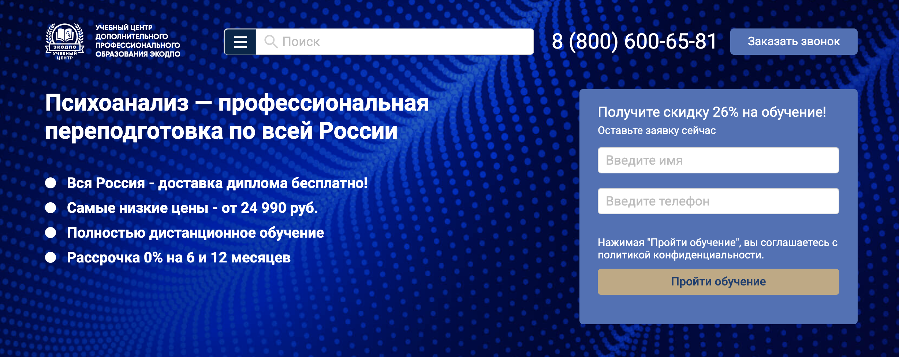- ✅ Официальный сайт: ecodpo.ru
- 💸 Цена обучения: от 24 990 ₽ (со скидкой 26%).
- 💳 Рассрочка: 0% на 6 и 12 месяцев от СБЕР и Т-Банк.
- 📚 Формат: дистанционные курсы, видеоматериалы, тестирование.
- ⏳ Продолжительность: от 250 часов (от 2 недель до 3 месяцев).
- 📜 Документ: диплом о профессиональной переподготовке.
- 📝 Трудоустройство: документ принимается работодателями и аттестационными комиссиями.
- 🔷 Для кого подходит курс: для психологов, педагогов, консультантов, желающих освоить методы психоанализа.
Особенности курса:
Программа включает изучение современных методов психоанализа в удобном дистанционном формате. Слушатели получают доступ к материалам 24/7, а диплом о переподготовке вносится в ФИС ФРДО. Возможность ускоренного прохождения курса и получения документа в течение 5-30 дней. Гибкая система обучения позволяет совмещать занятия с работой.
Кратко о программе:
- Доступ к материалам курса круглосуточно.
- Персональный учебный график.
- Занятия проходят полностью онлайн.
- Поддержка кураторов и преподавателей.
- Бесплатная пересдача итогового теста.
Чему учатся студенты:
- Основам психоанализа и его методам.
- Психоаналитической диагностике и консультированию.
- Психоаналитическим подходам к работе с детьми и взрослыми.
- Групповому психоанализу и клинической психологии.
- Современным психоаналитическим техникам.
Преимущества:
- Зачисление в день подачи заявки.
- Полностью дистанционное обучение.
- Бесплатная доставка диплома по России.
- Официальное внесение данных в ФИС ФРДО.
- Гибкий график без отрыва от работы.
- Скидки при групповом обучении.
Отзывы учеников:
Студенты отмечают удобный дистанционный формат, доступ к материалам 24/7 и высокий уровень преподавания. Диплом официально принимается работодателями, что делает курс востребованным. Все отзывы
Перейти на официальный сайт курса10. Клинико-психологическая диагностика и психотерапия — Среда обучения и Московский институт психоанализа
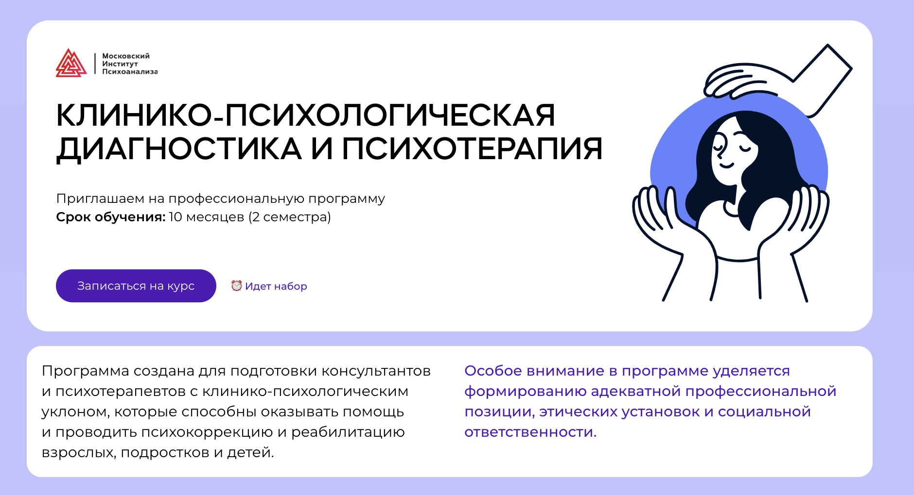- ✅ Официальный сайт: psychology.sredaobuchenia.ru
- 💸 Цена обучения: 120 000 ₽ за весь период обучения.
- 💳 Рассрочка: Уточняйте у специалистов приемной комиссии.
- 📚 Формат: Дистанционные занятия с возможностью смотреть записи вебинаров.
- ⏳ Продолжительность: 10 месяцев (2 семестра).
- 📜 Документ: Диплом Московского института психоанализа о профессиональной переподготовке.
- 📝 Трудоустройство: 8 из 10 выпускников достигают первых консультаций.
- 🔷 Для кого подходит курс: Для консультантов и психотерапевтов с клинико-психологическим уклоном.
Особенности курса:
Курс предлагает гибкий и удобный формат дистанционного обучения, идеально подходящий для студентов из разных регионов и стран. Программа включает в себя теоретические и практические дисциплины, специализации и практикумы, что позволяет участникам получить всестороннюю подготовку в области клинической психологии и психотерапии. Московский институт психоанализа предоставляет доступ к интеллектуальной платформе, где можно взаимодействовать с преподавателями и сокурсниками, что обогащает образовательный процесс. Кроме того, акцент в обучении делается на формирование этических установок и социальной ответственности, что особенно важно для профессионалов этой сферы.
Кратко о программе:
- Глубокое изучение методов психоанализа и психологической диагностики
- Практикумы и вебинары с обратной связью
- Освоение психотерапевтических техник для работы с разными возрастными группами
- Доступ к большому количеству учебных материалов и видеолекций
Чему учатся студенты:
- Диагностике и психокоррекции психологических проблем
- Специализированным методам психотерапии и психоанализа
- Проведению индивидуальных и групповых психотерапевтических сессий
- Этическим стандартам и социальной ответственности в профессиональной деятельности
Преимущества:
- Обучение осуществляется в удобном дистанционном формате
- Высокий уровень обучения, подтвержденный официальным дипломом
- Разнообразные учебные материалы доступны на протяжении всего курса
- Интерактивное обучение с опытными преподавателями-практиками
Отзывы учеников:
Студенты отмечают разнообразие изучаемых тем и глубокую проработку практических аспектов курса. Они высоко ценят доступность преподавателей и возможность учиться в комфортном для себя режиме. Практические занятия и обширная учебная база необходимы для успешного освоения материала. Все отзывы
Перейти на официальный сайт курса11. Курсы психоанализа — МШП
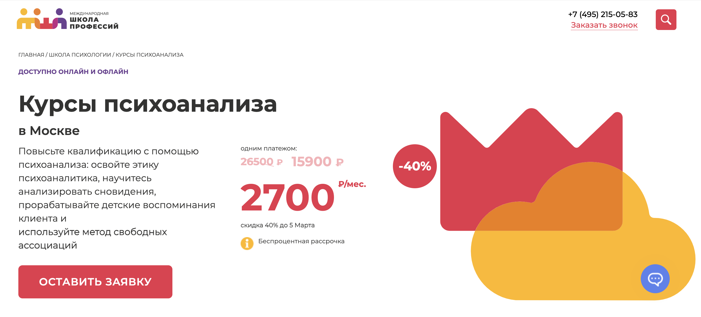- ✅ Официальный сайт: moscow.videoforme.ru
- 💸 Стоимость обучения: -40% при единовременной оплате 15 900 ₽.
- 💳 Рассрочка: беспроцентная по 2700 руб в мес.
- 📚 Формат: онлайн и офлайн занятия, включая работу с группами и индивидуальные проекты.
- ⏳ Продолжительность: гибкая, в зависимости от выбранной программы.
- 📜 Документ: диплом о профессиональной переподготовке.
- 📝 Трудоустройство: Поддержка в карьере и повышении квалификации.
- 🔷 Для кого подходит курс: для клинических психологов и психологов, желающих углубить свои знания в области современных психоаналитических подходов.
Особенности курса:
Программа обучения предлагает глубокое понимание психоаналитических методов и их применение в практике. Московский институт психологии обеспечивает качественное обучение благодаря сотрудничеству с международными психоаналитическими ассоциациями. Обучение проходит в удобных форматах дистанционного обучения, что позволяет улучшать навыки и теоретическую базу из любой точки мира. Студенты освоят методику работы с детскими воспоминаниями клиентов и методы свободных ассоциаций, а также научатся анализировать бессознательные процессы и сновидения.
Кратко о программе:
- Комплексный подход к изучению психоанализа
- Вебинары и личные консультации с опытными кураторами
- Практические сессии и анализ конкретных случаев
- Обширные учебные материалы и доступ к библиотеке
Чему учатся студенты:
- Выявлению и интерпретации бессознательных процессов
- Применению психоаналитических техник в психологическом консультировании
- Работе с клиентами в различных возрастных категориях
- Проведению индивидуальных и групповых терапий
Преимущества:
- Дистанционное обучение, адаптированное под любой график
- Диплом о переподготовке, признанный в профессиональном сообществе
- Возможность использовать полученные знания в личной практике
- Широкие возможности для карьерного роста и развития
Отзывы учеников:
Студенты отмечают высокий уровень преподавания и удобство дистанционного обучения. Они подчеркивают ценность практических заданий и возможность обратной связи с опытными преподавателями, что способствует повышению квалификации и профессиональному росту. Все отзывы
Перейти на официальный сайт курса12. Психоанализ, психоаналитическая психотерапия и консультирование — Московский институт психоанализа
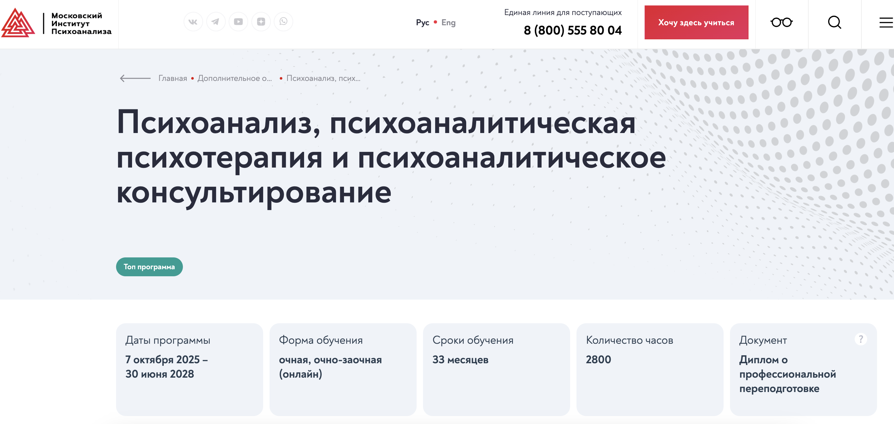- ✅ Официальный сайт: inpsycho.ru
- 💸 Цена обучения: 420 000 рублей
- 💳 Рассрочка: При ежемесячной оплате стоимость обучения составляет – 16 000 рублей/месяц (30 платежей), итоговая стоимость - 480 000 рублей
- 📚 Формат: очное и дистанционное обучение с вебинарами, практиками и мастер-классами.
- ⏳ Продолжительность: 33 месяца.
- 📜 Документ: диплом о профессиональной переподготовке.
- 📝 Трудоустройство: возможность присоединения к профессиональным психоаналитическим сообществам.
- 🔷 Для кого подходит курс: специалисты с высшим психологическим или медицинским образованием, желающие углубить знания в области психоанализа.
Особенности курса:
Программа предлагается для профессиональной переподготовки в области психоанализа и ориентирована на получение глубоких знаний и практических навыков. Учебный план включает лекции и практические занятия, в том числе вебинары, с преподавателями международного уровня. Окончание программы предоставляет возможность стать участником обучающих групп и профессиональных сообществ, что открывает двери для дальнейшего роста в карьере и получения новых профессиональных навыков.
Кратко о программе:
- Индивидуальная и групповая психоаналитическая терапия
- Интеграция классических техник и современных концепций
- Практика в психиатрических и наркологических учреждениях
- Доступ к лекциям и мастер-классам международных экспертов
Чему учатся студенты:
- Проведению первичного интервью с пациентами
- Разработке диагностического профиля
- Психоаналитическому наблюдению и консультированию
- Методам семейного психоаналитического консультирования
Преимущества:
- Гибкость в выборе формы обучения: очная или дистанционная
- Доступ к обучениям и профессиональным мероприятиям мирового уровня
- Ценные практические навыки и обучение у международных специалистов
- Широкие возможности для карьерного роста в области психоанализа
Отзывы учеников:
Студенты отмечают высокий уровень профессионализма преподавателей и доступность структуры курса. Особенно ценной считается возможность практического применения полученных знаний в реальных условиях. Все отзывы
Перейти на официальный сайт курса13. Психоанализ — Восточно-Европейский Институт Психоанализа
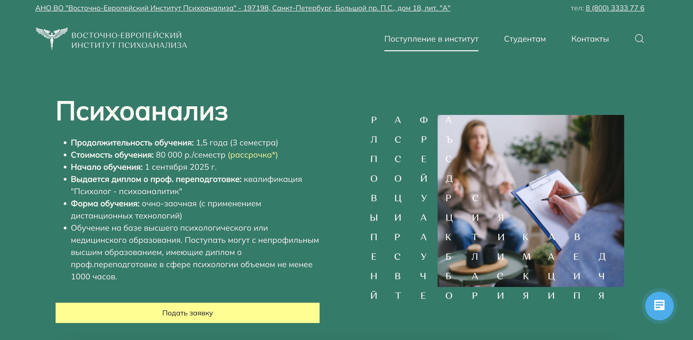
- ✅ Официальный сайт: eeip.ru
- 💸 Цена обучения: 80 000 ₽ за семестр.
- 💳 Рассрочка: возможна; можно разбить платеж на три части.
- 📚 Формат: очно-заочный с применением дистанционных технологий, включающий лекции и практические занятия.
- ⏳ Продолжительность: 1,5 года (3 семестра).
- 📜 Документ: диплом о профессиональной переподготовке, квалификация "Психолог-психоаналитик".
- 📝 Трудоустройство: Обучение дает возможность вести практику в психоаналитической сфере.
- 🔷 Для кого подходит курс: для лиц с высшим психологическим или медицинским образованием, а также для обладателей диплома о профессиональной переподготовке в сфере психологии.
Особенности курса:
Программа института предлагает углубленное изучение психоанализа в удобном формате, совмещающем очные и дистанционные формы обучения. Студенты изучат разнообразные теории психоанализа, технику интерпретации сновидений и механизмы психической защиты. В процессе обучения особое внимание уделяется групповой суперзвизии и развитию практических навыков посредством изучения клинических расстройств и психодинамических подходов.
Кратко о программе:
- Обширная учебная программа из 1110 академических часов
- Практическая подготовка через групповые супервизии
- Доступ к лекциям приглашенных зарубежных специалистов
- Тематические семинары по современному психоанализу
Чему учатся студенты:
- Техникам психоаналитической диагностики и терапии
- Интерпретации и техникам работы со сновидениями
- Психодинамическому подходу в семейной терапии
- Современным концепциям психоанализа
Преимущества:
- Гибкие условия оплаты и возможность рассрочки
- Доступ к удаленному обучению из любой точки мира
- Диплом, признанный на международном уровне
- Сильная поддержка от опытных преподавателей во время обучения
Отзывы учеников:
Студенты положительно отмечают высокий профессионализм преподавателей и возможность получать знания в удобной форме. Они подчеркивают доступность материалов и полезность практических занятий, которые способствуют их карьерному росту. Все отзывы
Перейти на официальный сайт курса14. Психоанализ и психоаналитическая психотерапия — Национальный исследовательский университет «Высшая школа экономики»
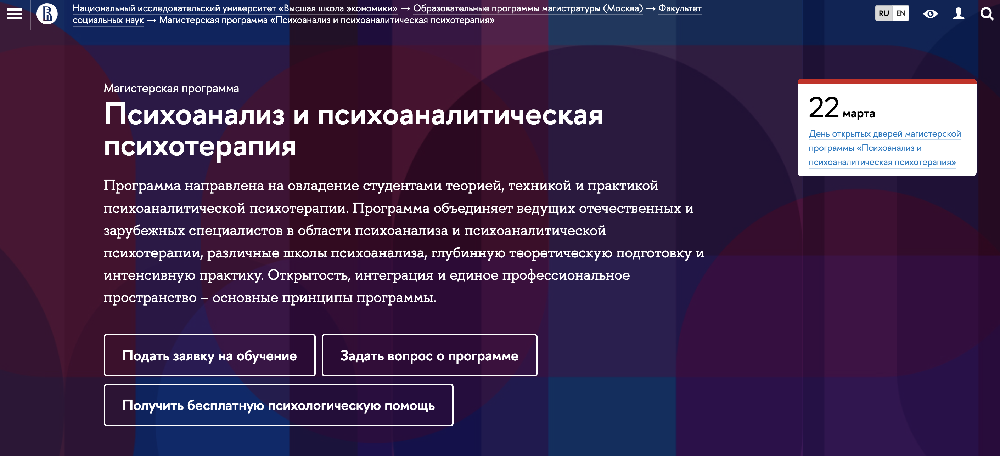- ✅ Официальный сайт: hse.ru
- 💸 Цена обучения: информация доступна по запросу.
- 💳 Рассрочка: доступна.
- 📚 Формат: дистанционные занятия, включая лекции и практические упражнения.
- ⏳ Продолжительность: 2 года.
- 📜 Документ: диплом о профессиональной переподготовке.
- 📝 Трудоустройство: поддержка в трудоустройстве и карьерном развитии.
- 🔷 Для кого подходит курс: для студентов и специалистов, желающих углубить знания в психоанализе.
Особенности курса:
Программа обеспечивает глубокое изучение психоаналитической психотерапии с акцентом на интеграцию теории и практики. Студенты изучают различные школы психоанализа, что способствует широкому теоретическому пониманию. В процессе обучения предусмотрены супервизии со специалистами мирового уровня, что повышает профессиональные навыки. Программа открыта для студентов из разных стран благодаря формату дистанционного обучения.
Кратко о программе:
- Индивидуальные супервизии и практические занятия
- Интенсивное изучение теорий психоанализа
- Участие в международных конференциях
- Доступ к разнообразным обучающим материалам
Чему учатся студенты:
- Применять методы психоанализа в терапии
- Руководить психоаналитическими сессиями
- Анализировать бессознательные процессы и символику сновидений
- Обеспечивать профессиональное консультирование
Преимущества:
- Дистанционное обучение, доступное из любой точки мира
- Международная аккредитация программы
- Возможность участия в профессиональных сообществах
- Гибкость в обучении и доступ к передовому опыту
Отзывы учеников:
Студенты отмечают высокое качество преподавания и ценность приобретенных знаний для практической деятельности. Отмечают возможность взаимодействия с ведущими специалистами и практическим опытом, который помогает при трудоустройстве. Все отзывы
Перейти на официальный сайт курсаБесплатные курсы
Бесплатный курс Психоанализ для жизни – Stepik
✅ Официальный сайт: stepik.org
Описание и особенности курса:
- Курс предоставляет возможность изучения психоаналитической психотерапии в дистанционном формате.
- Участники освоят профессиональные навыки и теоретическую базу в области психоанализа.
- Процесс обучения включает глубинное изучение методов современной психоаналитической практики.
- Слушатели изучают психологическое консультирование и клиническую практику в онлайн формате.
- По окончании курсов выдаются дипломы, признаваемые международными психоаналитическими ассоциациями.
- Учебные материалы доступны в любое удобное время, что позволяет учащимся адаптировать график обучения под свои нужды.
- Курс ориентирован на развитие практических навыков проведения группового и индивидуального психоанализа.
- Профессиональная переподготовка направлена на подготовку клинического психолога и психоаналитика.
Бесплатный онлайн-курс "Весь психоанализ" – Академия IT
✅ Официальный сайт: academiait.ru
Описание и особенности курса:
- Курс помогает сделать первый шаг в мир психоанализа без предварительных условий и обязательств.
- Дистанционный формат обучения позволяет изучать материалы в удобное время.
- Не требуется никакой предварительной подготовки или знаний для начала занятий.
- Участники получат доступ к 15 урокам по основам психоаналитического консультирования в онлайн формате.
- Курс охватывает ключевые методы и теории психоанализа, включая работы Карла Юнга и Альфреда Адлера.
- Участие в проекте дает возможность продолжить изучение темы через дополнительные курсы и учебные материалы.
- Все обучение проводится на русском языке, что обеспечивает максимальную доступность для слушателей.
- Несмотря на бесплатный характер, курс содействует развитию практических и профессиональных навыков в области психоанализа.
Кто такой психоаналитик?
Психоаналитик — это специалист в области психоанализа, направления психотерапии, основанного на теории Зигмунда Фрейда. Его задача — помочь человеку понять бессознательные мотивы своего поведения, разрешить внутренние конфликты и травмы, сформированные в детстве.
Психоаналитик работает на глубинном уровне психики, стремясь не только устранить симптомы, но и найти и проработать их корни. В отличие от психологов и психотерапевтов, психоаналитики используют специфические методики — свободные ассоциации, анализ сновидений, перенос и контрперенос.
Что делают психоаналитики и чем занимаются?
Работа психоаналитика включает глубокую и длительную работу с пациентами. Процесс может занимать месяцы или даже годы. В ходе терапии специалист помогает клиенту осознать скрытые внутренние конфликты, влияющие на его поведение, эмоции и личностное развитие.
- Проводят регулярные сессии — от 2 до 5 раз в неделю.
- Анализируют сновидения и свободные ассоциации пациента.
- Выстраивают доверительные отношения для работы с переносом.
- Помогают в проработке травм, страхов, тревожных состояний.
- Содействуют личностному росту и пониманию себя.
Психоаналитик не ставит диагнозы и не выписывает лекарства — это работа психиатра. Его основная задача — мягко и профессионально направлять клиента к осознанию и принятию своих внутренних переживаний.
Что должен знать и уметь психоаналитик?
Профессия требует не только глубоких теоретических знаний, но и высокоразвитых личностных качеств. Психоаналитик обязан обладать эмпатией, выдержкой, умением слушать и анализировать.
- Знание теории психоанализа (Фрейд, Юнг, Лакан, Адлер и др.).
- Понимание механизмов защит, бессознательного, эго и суперэго.
- Навыки анализа речи, жестов, ассоциаций пациента.
- Умение вести долгосрочную терапевтическую работу.
- Личная психоаналитическая терапия (обязательна во многих институтах).
Также важно постоянно повышать квалификацию, участвовать в супервизиях, следить за новыми исследованиями в области психоанализа.
Востребованность и зарплаты психоаналитиков в России в 2026 году
С каждым годом интерес к глубинной терапии в России растёт. В 2026 году профессия психоаналитика остаётся востребованной, особенно в крупных городах: Москве, Санкт-Петербурге, Екатеринбурге и др. Востребованность связана с растущим вниманием общества к психическому здоровью и осознанности.
Зарплата зависит от опыта, образования, количества клиентов и статуса специалиста.
- Начинающий психоаналитик: от 40 000 до 70 000 руб./мес.
- Специалист со стажем 3-5 лет: от 80 000 до 150 000 руб./мес.
- Опытный частнопрактикующий аналитик: от 200 000 руб. и выше.
Многие специалисты работают онлайн, расширяя клиентскую базу по всей России и за её пределами.
Как стать психоаналитиком и где учиться психоанализу?
Путь к профессии непростой и требует долгой подготовки. В России, чтобы стать психоаналитиком, нужно пройти несколько этапов:
- Получить высшее образование по психологии или медицине.
- Пройти специализированное обучение по психоанализу (3–6 лет).
- Обязательно пройти личную психоанализ-сессию (не менее 200 часов).
- Регулярно участвовать в супервизиях и семинарах.
Популярные учебные центры в России:
- Институт психоанализа (Москва).
- Институт глубинной психологии и психоанализа.
- Московская психоаналитическая школа.
Кому подходят курсы обучения психоанализу?
Профессия подойдёт тем, кто обладает высокой степенью эмпатии, любит разбираться в психологии человека, не боится работать с глубинными проблемами и готов к постоянному саморазвитию.
- Интровертам, умеющим слушать и анализировать.
- Тем, кто хочет помогать людям справляться с внутренними трудностями.
- Людям с философским складом ума и интересом к бессознательному.
Важно быть морально устойчивым и готовым к длительной работе без быстрых результатов.
Преимущества и недостатки профессии психоаналитика
Как и любая профессия, работа психоаналитика имеет свои плюсы и минусы:
- Плюсы: высокая значимость работы, возможность глубокого взаимодействия с людьми, высокий доход у опытных специалистов.
- Минусы: длительное обучение, эмоциональная нагрузка, необходимость постоянного самоконтроля и самоанализа.
Психоаналитик — это не просто профессия, а призвание, требующее глубокой вовлечённости, многолетней подготовки и постоянного развития. Несмотря на сложность пути, профессия даёт уникальную возможность помогать людям понимать себя, улучшать качество их жизни и способствовать личностному росту.
Если вы чувствуете интерес к глубинной психологии, обладаете терпением, вниманием и эмпатией — путь психоаналитика может стать для вас не только профессией, но и делом жизни.
Частозадаваемые вопросы и ответы на них
Что такое обучение психоанализу и как его начать?
Обучение психоанализу – это процесс подготовки специалистов, которые осваивают методы и техники психоанализа для практической работы с клиентами. Курсы по психоанализу включают изучение теоретических знаний и практических навыков, необходимых для успешного применения психоаналитической терапии. Чтобы начать обучение, обычно необходимо иметь базовое психологическое образование или завершить профессиональную переподготовку в сфере психологии.
Какие форматы обучения психоанализу доступны сегодня?
Сегодня доступны различные форматы обучения психоанализу, включая дистанционный формат, онлайн курс и очные семинары. Дистанционные курсы и онлайн формат являются особенно популярными, так как позволяют изучать материал в удобное время и в удобном месте, что особенно актуально для работающих специалистов.
Каковы преимущества дистанционного обучения на психоаналитика?
Дистанционное обучение психоанализу предлагает удобный формат, который позволяет студентам изучать материал в удобное время и по собственному графику. Это способствует лучшему усвоению теоретических знаний и освоению психоаналитических техник без необходимости посещать учебные заведения.
Что включает в себя программа профессиональной переподготовки по психоанализу?
Программа профессиональной переподготовки по психоанализу включает в себя изучение основ психоанализе и психоаналитической терапии, теоретическую подготовку по ключевым теориям и методам психоанализа, а также обучение практическим навыкам консультирования. Обычно такие программы завершаются практическими занятиями и супервизией под руководством опытных психоаналитиков.
Какие навыки можно получить по завершению обучения на психоаналитика?
По завершению обучения на психоаналитика выпускники получают глубокое понимание теоретических основ психоанализа и освоят техники психоаналитического консультирования. Также у них развиваются практические навыки в проведении индивидуальных и групповых психоаналитических сессий, что позволяет предоставлять квалифицированную психологическую помощь.
Как пройти курсы по психоанализу в онлайн формате?
Для того чтобы пройти курсы по психоанализу в онлайн формате, необходимо зарегистрироваться на образовательной платформе, предлагающей такие программы. Студенты получают доступ к материалов курса, включая лекции, вебинары и учебные задания. Онлайн формат позволяет взаимодействовать с преподавателями и другими участниками через интернет.
Каковы требования для поступления на курсы по психоанализу?
Требования для поступления на курсы по психоанализу могут варьироваться в зависимости от программы и учебного заведения. Обычно необходимо иметь высшее психологическое образование или быть готовым пройти программу профессиональной переподготовки для получения необходимых знаний и навыков.
Какова стоимость обучения на психоаналитика?
Стоимость обучения на психоаналитика зависит от выбора программы, учебного заведения и формата обучения. Обычно дистанционные курсы стоят дешевле очных, но могут предложить ту же образовательную ценность. Важно уточнять стоимость и условия оплаты перед началом обучения.
Как получить диплом по окончанию курсов по психоанализу?
По окончанию курсов по психоанализу и успешному завершению всех требований программы студентам выдается диплом, который свидетельствует о пройденном обучении и полученных профессиональных навыках. Этот диплом может быть признан международными психоаналитическими ассоциациями и открывает возможности для профессиональной деятельности.
Какие темы изучаются на курсах психоанализа?
На курсах по психоанализу изучаются основные теории и методы психоанализа, включая работы Зигмунда Фрейда и современных психоаналитиков. Студенты также знакомятся с концепциями бессознательных процессов, депрессии, психологических конфликтов и других аспектов глубинной психологии.
Где можно пройти профессиональную переподготовку в области психоанализа?
Профессиональную переподготовку на психоаналитика можно пройти в специализированных институтах и учебных центрах, которые предлагают такие программы. Московский институт психоанализа и другие престижные учреждения предоставляют программы обучения, которые соответствуют международным стандартам.
Как проходят практические занятия?
Практические занятия по психоанализу проводятся под руководством опытных психоаналитиков и включают как индивидуальные, так и групповые сессии. Студенты получают возможность применять полученные знания и развивать профессиональные навыки в условиях, приближенных к реальной клинической практике.
Как международные психоаналитические ассоциации влияют на обучение психоанализу?
Международные психоаналитические ассоциации устанавливают стандарты и требования к обучению психоанализу, что способствует повышению качества образовательных программ. Они также предоставляют возможности для сертификации выпускников и признают дипломы, полученные в аккредитованных учебных заведениях.
Какое значение имеет завершение обучения для профессиональной деятельности?
Завершение обучения по психоанализу и получение диплома позволяет заниматься профессиональной деятельностью в области психоаналитической терапии и консультирования. Это открывает двери для работы в клинических центрах, частной практике и может служить основанием для вступления в профессиональные сообщества.
Какие перспективы открываются после завершения курсов по психоанализу?
После завершения курсов обучения на психоаналитика выпускники могут заниматься клинической практикой, участвовать в международных психоаналитических конференциях и продолжать профессиональное развитие через супервизии и дополнительные семинары. Это также позволяет сотрудничать с психологическими центрами и клиниками, предоставляя квалифицированную помощь клиентам.
------------------------------------------------
Реклама. Информация о рекламодателе по ссылкам в статье.